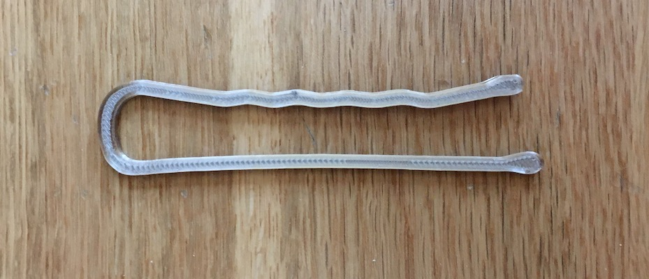
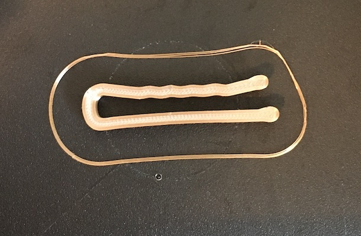
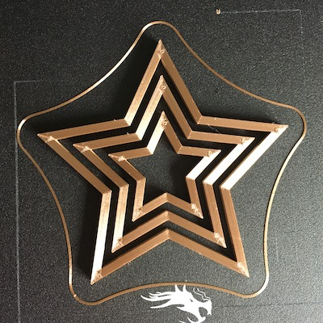
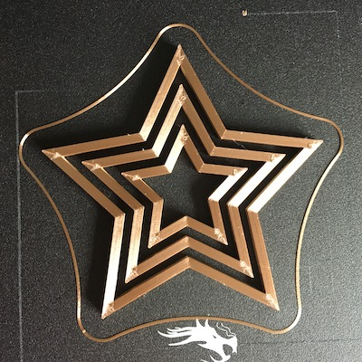

Grasshopper - Clips and Nesting
I must admit, learning Grasshopper last week was little intimidating, but once I had time to experiment and understand how it works, I had a lot of fun building this week.
CLIPS
I started working on the clips first. The inspiration for my clips this week was a bobby pin. I first found a picture of a bobby pin on the
internet, and then I turned it into a vector in Illustrator, just like in week 1. Because I knew I was going to have to be able to clip two
layers of cardboard together, I adjusted the sketch to accomodate the width of two layers of cardboard. Once the vector artwork was finished
I moved it into Rhino, and opened Grasshopper.
I highlighted the image and set it as a curve in Grasshopper. Next, I added the Offset Curve,
and added a slider to the distance so I could easily adjust the space of the clip if needed. After, I added an extrude for both the original
curve and the offset curve so I could control the height of each of the walls indpendently. My final move in Grasshopper was to group the extrusions
together and bake them. I then put a simple cap on the bobby pin, exported the design with a 0.001 extrusion (understanding how to manipulate
meshes especially on curved surfaces has really helped me this week). I sliced it in Cura with Standard quality settings, with a skirt, changig the
infill pattern to cubic, and updating the mesh resolution and travel resolution to .5. I had to adjust the clip distance after my print was wayyyy
too big, but on the next print I was able to print a successful width, and proceeded to print all 10. See below for my excitement over the success
of my clips.


Check out my files
GrasshopperSTL
Original image
{kind=link}
Additional Videos
NESTING
Nesting was an interesting expereince, but the instruction from class last week was pretty easy to follow. I first drew a star in Illustrator and imported it into Rhino. I set it as a curve in Grasshopper and then the fun began. I thought the easiest path to success wwas to make enough offset curves to be able to generate 3 stars. I made multiple offset curves until I had enough. Next I created separate extrusioins for each wall (I'll explain later why I did this instead of them sharing the same slider for extrusion height). Once all the walls were built and the extrusions were correct, I group the walls accoring to the 3 nests and baked each of them separately. Next, I capped each in Rhino, but each time I did a Boolean difference to ensure the stars were outlines and not solid objects. I exported the design, and because there were no curves, I used 0.00 extrusion. Once in Cura, I sliced this with low quality settings, and infill lines. Once the print started I immediately had problems with the top and botton layer pattern settings, but I was able to change the pattern to concentric so it printed easier. I started my second print and thought it was a success, but then I realized the top point in my middle circle had lifted. This resulted in a quick bed adjustment, a reprint, and a successful print. This was the longest print I have done so far at 2 hours. It was nerve wracking because I was worried something would go wrong and the time would be wasted, but I was pleased by this process. The reason I made each wall have a different extrusion is because I want to try a print where the tops of the stars aren't level, but they gradually decline from the center star. I haven't finished this yet, but I wanted the oportunity to start it now, rather than later.

 

Check out my files
GrasshopperRhino
STL